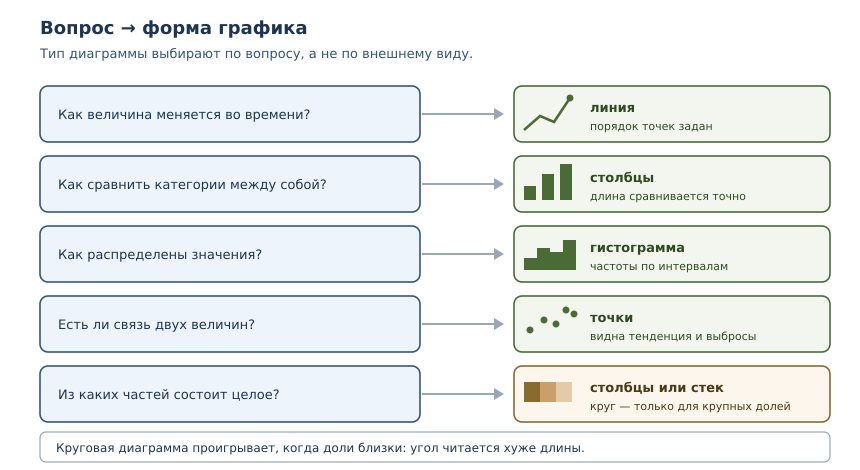
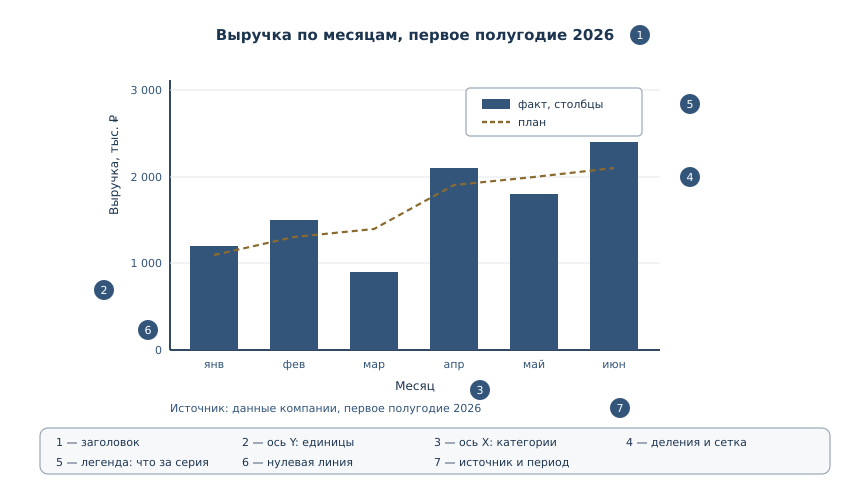

Визуализация данных
Как превращать данные в понятные графики: выбор типа диаграммы, оси, подписи, честность и экспорт.
В этой главе
Таблица с сотней чисел честна и почти бесполезна: закономерность в ней есть, но увидеть её трудно. График показывает ту же информацию иначе — глаз сразу замечает рост, провал, выброс или разброс. Визуализация не украшение отчёта, а инструмент мышления: иногда именно она делает проблему очевидной. Эта глава о том, как строить графики, которые не врут, и как выбирать форму под вопрос, а не под привычку.
56.1 Что вы сможете после этой главы
К концу главы вы сможете делать следующее.
- выбирать тип диаграммы под вопрос: динамика, сравнение, распределение, связь, части целого;
- объяснять анатомию графика: данные, оси, единицы, подписи, легенда, источник;
- строить графики через
matplotlibс объектной модельюFigure/Axes; - замечать нечестные графики: обрезанную шкалу, неуказанные единицы, сравнение несравнимого, путаницу корреляции с причинностью;
- готовить данные для графика отдельно от рисования и проверять эту подготовку тестами;
- экспортировать рисунок в PNG или SVG с нужным разрешением.
56.2 Зачем визуализация
Визуализация данных — представление данных графиком или диаграммой, чтобы читатель увидел закономерность быстрее, чем в таблице. У глаза есть сильная сторона: он мгновенно сравнивает длины, положения и наклоны. У таблицы — другая: она хранит точные значения. Хороший отчёт использует обе.
График решает четыре задачи.
- Динамика. Как менялась величина во времени: росла, падала, колебалась.
- Сравнение. Какая категория больше и насколько.
- Распределение. Где центр значений и насколько велик разброс; есть ли выбросы.
- Связь. Меняются ли две величины согласованно.
Есть и пятая задача — части целого, но с ней чаще всего ошибаются, поэтому о ней отдельно.

56.3 Из чего состоит график
График — это не картинка, а утверждение о данных. У него есть обязательные части, без которых утверждение становится двусмысленным.
- Данные. Что именно изображено: одна серия или несколько, за какой период, в каких единицах.
- Тип диаграммы. Форма, соответствующая вопросу.
- Оси. Горизонтальная и вертикальная, с подписями и единицами измерения.
- Деления и диапазон. Откуда начинается шкала и какой шаг между делениями.
- Заголовок. Что и за какой период показано.
- Легенда. Что означает каждая серия, если их несколько.
- Источник. Откуда данные и когда они собраны.

Пропущенная часть почти всегда превращается в вопрос читателя. Нет единиц — непонятно, рубли это или тысячи рублей. Нет периода — непонятно, к чему относятся числа. Нет источника — невозможно проверить.
56.4 Выбор типа диаграммы
Типы диаграмм — формы представления данных, каждая из которых отвечает на свой вопрос. Выбор делают по вопросу, а не по внешнему виду.
| Вопрос | Тип | Почему |
|---|---|---|
| как меняется во времени | линия | порядок точек задан, важна форма изменения |
| как сравнить категории | столбцы | длина столбца сравнивается точно |
| как распределены значения | гистограмма | показывает частоты по интервалам |
| насколько велик разброс | ящик с усами | видны медиана, квартили и выбросы |
| есть ли связь двух величин | точки | видна общая тенденция и выбросы |
| из каких частей состоит целое | столбцы или стек | доли читаются точнее, чем сектора |
Круговая диаграмма — частая ошибка начинающих. Угол сектора человек сравнивает хуже, чем длину, а при близких долях разница вообще не видна. Если доли почти равны, круговая диаграмма создаёт ложное впечатление одинаковости.
shares = {"A": 27, "B": 25, "C": 24, "D": 24}
total = sum(shares.values())
percent = {name: round(value * 100 / total, 1) for name, value in shares.items()}
print("доли, %:", percent)
print("разница между максимумом и минимумом:", round(max(percent.values()) - min(percent.values()), 1), "п.п.")
доли, %: {'A': 27.0, 'B': 25.0, 'C': 24.0, 'D': 24.0}
разница между максимумом и минимумом: 3.0 п.п.
Разница три процентных пункта: на глаз сектора почти неотличимы, а столбцы с подписанными значениями покажут её честно.
56.5 matplotlib: фигура и оси
matplotlib — библиотека построения графиков для Python: фигуры, оси, линии, столбцы, подписи и сохранение в файл. Она не входит в стандартную библиотеку, поэтому её устанавливают как зависимость проекта:
$ uv add matplotlib
Внутри matplotlib есть две модели работы. Простая, через pyplot, действует
на «текущую фигуру» и удобна для быстрых экспериментов. Основная, объектная,
работает с явными объектами: Figure — весь рисунок, Axes — область с
осями и данными. Для кода, который живёт дольше одного скрипта, используют
вторую: она предсказуема, потому что не зависит от глобального состояния.
import matplotlib.pyplot as plt
months = ["янв", "фев", "мар", "апр", "май", "июн"]
revenue = [1200, 1500, 900, 2100, 1800, 2400]
fig, ax = plt.subplots(figsize=(8, 4.5))
ax.plot(months, revenue, marker="o", linewidth=2, color="#33557a")
ax.set_title("Выручка по месяцам, первое полугодие 2026")
ax.set_xlabel("Месяц")
ax.set_ylabel("Выручка, тыс. ₽")
ax.set_ylim(bottom=0)
ax.grid(True, axis="y", alpha=0.3)
fig.tight_layout()
fig.savefig("revenue.png", dpi=150, bbox_inches="tight")
Разберём строки. plt.subplots() возвращает фигуру и оси; ax.plot рисует
линию с маркерами; set_* задают подписи и диапазон; grid добавляет сетку
по горизонтали; tight_layout убирает обрезанные подписи; savefig
сохраняет результат. Обратите внимание на set_ylim(bottom=0): для столбцов
и площадей нулевая линия обязательна, иначе длины искажаются.
56.6 Четыре базовых графика
Одни и те же данные можно показать по-разному, и форма должна отвечать на вопрос. Ниже — четыре типовых случая.
Столбцы: сравнение категорий
fig, ax = plt.subplots(figsize=(8, 4.5))
ax.bar(months, revenue, color="#33557a")
ax.set_title("Выручка по месяцам")
ax.set_ylabel("Выручка, тыс. ₽")
ax.set_xlabel("Месяц")
ax.set_ylim(bottom=0)
for index, value in enumerate(revenue):
ax.text(index, value + 40, f"{value}", ha="center", fontsize=9)
fig.tight_layout()
Подписи значений над столбцами избавляют читателя от необходимости оценивать высоту на глаз — для небольших наборов данных это хорошая практика.
Гистограмма: распределение
durations = [12, 15, 18, 18, 21, 24, 24, 27, 30, 35, 41, 44, 47, 52]
fig, ax = plt.subplots(figsize=(8, 4.5))
ax.hist(durations, bins=range(0, 61, 10), edgecolor="white")
ax.set_title("Распределение времени доставки")
ax.set_xlabel("Время, мин")
ax.set_ylabel("Число заказов")
fig.tight_layout()
Гистограмма показывает, как значения распределены по интервалам. Это не столбцы сравнения категорий: интервалы упорядочены, а высота означает частоту. Число интервалов влияет на вид — слишком крупные скрывают структуру, слишком мелкие показывают шум.
Посчитаем частоты без matplotlib, чтобы проверить данные до рисования.
values = [12, 15, 18, 18, 21, 24, 24, 27, 30, 35, 41, 44, 47, 52]
def histogram(items, width):
bins = {}
for value in items:
start = value // width * width
bins[start] = bins.get(start, 0) + 1
return sorted(bins.items())
print("границы и частоты:", histogram(values, 10))
print("всего значений:", len(values))
границы и частоты: [(10, 4), (20, 4), (30, 2), (40, 3), (50, 1)]
всего значений: 14
Точечный график: связь величин
hours = [2, 3, 4, 5, 6]
scores = [60, 65, 70, 68, 75]
fig, ax = plt.subplots(figsize=(6, 4.5))
ax.scatter(hours, scores, s=60, alpha=0.8)
ax.set_title("Подготовка и результат")
ax.set_xlabel("Часы подготовки")
ax.set_ylabel("Баллы")
fig.tight_layout()
Точки показывают пары значений. По ним видна общая тенденция, разброс и отдельные выбросы — но не доказательство причины: связь двух величин сама по себе ничего не говорит о том, что одна вызывает другую.
Линия с двумя сериями и легендой
fact = [1200, 1500, 900, 2100, 1800, 2400]
plan = [1100, 1300, 1400, 1900, 2000, 2100]
fig, ax = plt.subplots(figsize=(9, 4.5))
ax.plot(months, fact, marker="o", label="Факт")
ax.plot(months, plan, marker="s", linestyle="--", label="План")
ax.set_title("Факт и план по месяцам")
ax.set_xlabel("Месяц")
ax.set_ylabel("Выручка, тыс. ₽")
ax.set_ylim(bottom=0)
ax.legend(title="Серия", loc="upper left")
ax.grid(True, axis="y", alpha=0.3)
fig.tight_layout()
Две серии на одном графике сравнимы, только если это одни и те же единицы и один и тот же период. Легенда обязательна: без неё читатель не знает, какая линия что означает.
56.7 Оси, подписи и легенда
Оси и подписи графика — подписи осей, единицы, заголовок, легенда, диапазон и деления. Без них график вводит в заблуждение, даже если данные верны.
Правила, которые закрывают большинство проблем.
- Единицы в подписи оси. «Выручка, тыс. ₽» лучше, чем «Выручка».
- Диапазон оси осознан. Для столбцов нижняя граница — ноль. Для линий можно начать выше нуля, если это явно видно на шкале.
- Заголовок отвечает на вопрос. «Выручка по месяцам, первое полугодие 2026» лучше, чем «График».
- Легенда только при нескольких сериях. Одна серия объясняется подписью оси.
- Деления читаемы. Десять делений на сантиметр — шум; три-пять — ориентир.
- Источник и период. Кто и когда собрал данные.
Данные для графика удобно готовить отдельно от рисования. Тогда подготовку можно проверить тестом, а рисование заменить или убрать.
rows = [
{"month": "янв", "revenue": 1200},
{"month": "фев", "revenue": 1500},
{"month": "мар", "revenue": 900},
]
def monthly_series(rows):
return [row["month"] for row in rows], [row["revenue"] for row in rows]
months, revenue = monthly_series(rows)
print("подписи:", months)
print("значения:", revenue)
print("длины совпадают:", len(months) == len(revenue))
подписи: ['янв', 'фев', 'мар']
значения: [1200, 1500, 900]
длины совпадают: True
Функция monthly_series ничего не знает о matplotlib: она превращает данные в
две последовательности. Тест проверяет её без установки библиотеки, а
рисование получает готовые списки.
56.8 Честность графика
Честность графика — отсутствие искажений: подходящий диапазон оси, честное сравнение, указание источника и неопределённости. График может быть формально правильным и при этом создавать ложное впечатление — это и есть нечестная визуализация.
Посмотрим, как обрезанная шкала меняет восприятие. Три магазина с выручкой 98, 100 и 103 тыс. ₽ выглядят почти одинаково, но если начать ось с 95, разница превращается в «в разы».
values = [98, 100, 103]
baseline = 95
heights = [value - baseline for value in values]
print("фактические значения:", values)
print("высоты при базе 0:", values)
print("высоты при базе 95:", heights)
print("отношение значений:", round(values[2] / values[0], 3))
print("отношение высот при базе 95:", round(heights[2] / heights[0], 1))
фактические значения: [98, 100, 103]
высоты при базе 0: [98, 100, 103]
высоты при базе 95: [3, 5, 8]
отношение значений: 1.051
отношение высот при базе 95: 2.7
Значения отличаются на 5 %, а столбцы при обрезанной оси — в 2,7 раза. Для столбцов длина кодирует величину, поэтому нулевая линия обязательна.
Другие распространённые искажения:
- Двойная ось Y. Две шкалы на одном графике позволяют подогнать любую «впечатляющую» корреляцию; без сильной причины так делать не стоит.
- Трёхмерные диаграммы. Перспектива искажает длины и площади.
- Круговая диаграмма с близкими долями. Сектора неразличимы, а сумма должна быть 100 %.
- Выбранный период. Можно показать «рост» за удачные месяцы, скрыв предыдущий спад.
- Среднее без разброса. Одно число скрывает, что половина значений сильно отличается от него.
- Корреляция как причина. Согласованный рост двух величин не доказывает, что одна вызвала другую.
56.9 Практика: от данных к графику
Разделим работу на три шага: прочитать данные, агрегировать, нарисовать. Так каждый шаг проверяется отдельно, а рисование можно заменить.
Шаг 1. Прочитать CSV
Читаем строки как записи с именованными полями и сразу приводим числа к int:
дальше с ними работают как со значениями, а не как с текстом.
import csv
import io
raw = """month,revenue
2026-01,1200
2026-02,1500
2026-03,900
2026-04,2100
2026-05,1800
2026-06,2400
"""
reader = csv.DictReader(io.StringIO(raw))
rows = [{"month": row["month"], "revenue": int(row["revenue"])} for row in reader]
print("месяцев:", len(rows))
print("выручка:", [row["revenue"] for row in rows])
best = max(rows, key=lambda row: row["revenue"])
print("лучший месяц:", best["month"], best["revenue"])
print("рост к январю:", round(rows[-1]["revenue"] / rows[0]["revenue"], 2))
месяцев: 6
выручка: [1200, 1500, 900, 2100, 1800, 2400]
лучший месяц: 2026-06 2400
рост к январю: 2.0
Шаг 2. Агрегировать и упорядочить
Часто перед графиком нужно посчитать итоги по категориям и отсортировать их — столбцы читаются лучше, когда упорядочены.
totals = {"март": 900, "январь": 1200, "февраль": 1500}
ordered = sorted(totals.items(), key=lambda item: item[1], reverse=True)
print("по убыванию:", [name for name, value in ordered])
print("значения:", [value for name, value in ordered])
по убыванию: ['февраль', 'январь', 'март']
значения: [1500, 1200, 900]
Шаг 3. Нарисовать
Рисование получает готовые списки и не занимается ни чтением файлов, ни сортировкой — только оформлением.
titles = ["февраль", "январь", "март"]
values = [1500, 1200, 900]
fig, ax = plt.subplots(figsize=(6, 4))
ax.bar(titles, values, color="#33557a")
ax.set_title("Выручка по месяцам, тыс. ₽")
ax.set_ylabel("Выручка, тыс. ₽")
ax.set_ylim(bottom=0)
fig.tight_layout()
fig.savefig("monthly.svg")
Данные можно брать и из JSON — например, если описание графика приходит из конфигурации отчёта.
import json
raw = '{"title": "Выручка по месяцам", "x": ["янв", "фев", "мар"], "series": [{"name": "факт", "values": [1200, 1500, 900]}, {"name": "план", "values": [1100, 1300, 1400]}]}'
spec = json.loads(raw)
print("заголовок:", spec["title"])
print("категорий:", len(spec["x"]))
print("серий:", len(spec["series"]))
for series in spec["series"]:
print(series["name"], sum(series["values"]))
заголовок: Выручка по месяцам
категорий: 3
серий: 2
факт 3600
план 3800
Рисование по такому описанию — один цикл по сериям:
import json
import matplotlib.pyplot as plt
spec = json.loads(open("chart.json", encoding="utf-8").read())
fig, ax = plt.subplots(figsize=(8, 4.5))
for series in spec["series"]:
ax.plot(spec["x"], series["values"], marker="o", label=series["name"])
ax.set_title(spec["title"])
ax.set_xlabel("Месяц")
ax.set_ylabel("Выручка, тыс. ₽")
ax.set_ylim(bottom=0)
ax.legend(title="Серия")
fig.tight_layout()
fig.savefig("chart.png", dpi=150, bbox_inches="tight")
56.10 Экспорт рисунка
Экспорт рисунка — сохранение графика в файл с достаточным разрешением и встраивание в документ или презентацию. Формат выбирают по назначению.
| Формат | Когда подходит | Что важно |
|---|---|---|
| PNG | презентации, веб, скриншоты | разрешение dpi, размер в пикселях |
| SVG | отчёты, документы, масштабирование | векторный, текст остаётся текстом |
| печать и публикация | векторный, встраивается в PDF-отчёт |
Практические параметры:
fig.savefig("chart.png", dpi=300, bbox_inches="tight") # печать
fig.savefig("chart.svg") # масштабирование без потерь
dpi задаёт число точек на дюйм: 150 достаточно для экрана, 300 — для печати.
bbox_inches="tight" убирает лишние поля и обрезанные подписи. Для отчётов
формат SVG предпочтительнее: он остаётся чётким при любом масштабе, а текст в
нём можно выделить. Для слайдов и мессенджеров удобнее PNG, потому что он
открывается везде.
56.11 Когда лучше таблица
График не всегда лучше таблицы. Таблица выигрывает, когда:
- значений мало (пять-десять) и нужны точные числа;
- читатель будет искать конкретное значение, а не сравнивать форму;
- важна доступность: таблицу читают программы экранного доступа;
- данные нужно скопировать или проверить;
- значения несопоставимы по природе, и общая шкала введёт в заблуждение.
Хороший отчёт часто содержит и график, и таблицу: график показывает закономерность, таблица даёт точные значения для проверки.
56.12 Типичные ошибки
- Обрезанная ось у столбцов. Длины перестают быть пропорциональны значениям, и разница выглядит драматичнее, чем есть.
- Нет единиц измерения. «Выручка» без «тыс. ₽» читается неверно.
- Нет периода и источника. График невозможно ни понять, ни проверить.
- Круговая диаграмма для близких долей. Сектора неразличимы, сравнение невозможно.
- Две серии в разных единицах на одной оси. Сравнение бессмысленно; нужны две оси с явной оговоркой или два графика.
- Гистограмма вместо столбцов. Гистограмма показывает распределение, а не сравнение категорий.
- Корреляция как причина. Согласованный рост не доказывает влияние.
- Рисование без проверки данных. Ошибка в агрегации попадёт на график и станет убедительной картинкой.
- Слишком много линий на одном графике. Больше трёх-четырёх серий глаз не различает; лучше несколько графиков.
56.13 Упражнения
1. Вопрос и форма
Для каждого вопроса выберите тип диаграммы и объясните: (а) как менялась посещаемость по неделям; (б) сколько студентов в каждой из пяти групп; (в) как распределены оценки за экзамен; (г) связаны ли часы подготовки и балл; (д) какую долю бюджета занимает каждая из четырёх статей.
2. Анатомия графика
Дан график без подписей: по оси Y числа от 0 до 3000, по оси X шесть категорий, две линии. Перечислите, каких элементов не хватает, и объясните, какой вопрос возникнет у читателя из-за каждого пропуска.
3. Подготовка данных
Дан список строк вида "2026-03,1200". Напишите функцию, которая возвращает
два списка: месяцы и значения. Проверьте, что длины совпадают и что значения
преобразованы в int. Библиотеку matplotlib не используйте.
4. Обрезанная шкала
Значения: 240, 250, 260. Постройте мысленно два варианта столбцов: с нулевой линией и с нижней границей 230. Во сколько раз визуально отличаются крайние столбцы в каждом варианте? Объясните, какой вариант честнее и почему.
5. Гистограмма
Дан список времён доставки: 12, 15, 18, 18, 21, 24, 24, 27, 30, 35, 41, 44, 47, 52. Посчитайте частоты для интервалов по 10 минут без matplotlib и объясните, как изменится вид гистограммы при интервале 5 минут.
6. Две серии
Даны фактические значения по месяцам и план. Напишите функцию, которая возвращает список отклонений «факт минус план» и список процентов выполнения плана. Объясните, почему для графика достаточно первого списка, а для отчёта — второго.
7. Честность
Найдите три ошибки в описании графика: «График показывает, что выручка выросла на 300 % за месяц; ось Y начинается с 950; данные за март; единицы не указаны; вторая линия — количество сотрудников». Что нужно исправить?
8. Корреляция и причина
Данные показывают, что продажи мороженого и число утоплений растут одновременно. Сформулируйте два объяснения, при которых одна величина не служит причиной другой, и предложите, какие данные помогли бы разобраться.
9. Экспорт
Вам нужно вставить график в PDF-отчёт и в презентацию. Какой формат выбрать для каждого случая и какие параметры указать? Объясните разницу между растровым и векторным форматами.
10. Мини-задача: отчёт по месяцам
Дан CSV с колонками month,revenue,plan. Напишите конвейер: прочитать данные,
посчитать отклонение от плана, упорядочить месяцы по времени, подготовить две
серии для графика. Нарисуйте линию факта и пунктир плана, добавьте заголовок,
подписи осей с единицами, легенду и нулевую линию. Сохраните в PNG и SVG.
56.14 Проверка понимания
- Какие четыре задачи решает график и как им соответствуют типы диаграмм?
- Перечислите обязательные элементы графика и объясните, что произойдёт при пропуске каждого.
- Почему для столбцов нулевая линия обязательна, а для линий — нет?
- Чем объектная модель
Figure/Axesудобнееpyplot? - Почему данные для графика стоит готовить отдельной функцией?
- В чём разница между PNG и SVG и когда что выбирать?
- Когда таблица лучше графика?
- Почему корреляция не доказывает причинность и как это влияет на подписи графика?
56.15 Связи
Глава опирается на работу с коллекциями из глав 12–18, на чтение CSV и JSON из главы 19 и на управление зависимостями из главы 33: matplotlib — сторонняя библиотека, поэтому её установку и версии фиксируют так же, как любую другую зависимость. Сортировка и ключи из главы 23 нужны для упорядочивания категорий, а функции из главы 7 — для отделения подготовки данных от рисования. Интерфейс на tkinter из главы 55 показывает, как встроить график в окно приложения.
Глава завершает книгу: после неё остаются проекты из глав 46–48 и самостоятельная практика. Визуализация соединяет три вещи, которые книга разбирала по отдельности: данные, код и читателя. График, который честно показывает закономерность и не скрывает ограничений, — такой же результат инженерной работы, как тесты и понятный интерфейс.